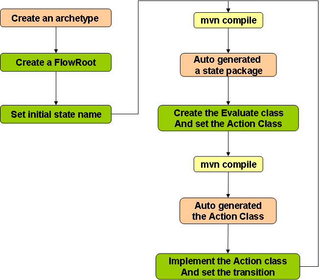

sf-flow-api
Maven2Archetype
Developer can easily develop applications by using the Maven2Archetype.
Maven2Archetype provides the following merits.
- Using Archetype
There are all initial settings of sf-flow in the Archetype. Therefore, developer can quickly start to develop.
- Generate State package
If developer command "mvn compile" after setting initial State in the package-info.java or setting state transition in the Action Class, Maven2 automatically generate the State package.
- Generate Action Class
If developer command "mvn compile" after setting Action Class in the Evaluate Class, Maven2 automatically generate Action Class. Therefore, developer needs only describing the implementation of Action Class.
The step of development with the Archetype is Fig.5. Next page describe the step of developing sample B2BUA application.
Fig.5 The step of development with the Archetype
Usage of Maven2Archetype for sf-flow
Add the following settings to $HOME/.m2/settings.xml.
<repositories>
<repository>
<id>jboss-public-repository-group</id>
<name>JBoss Public Maven Repository Group</name>
<url>https://repository.jboss.org/nexus/content/groups/public/</url>
<layout>default</layout>
<releases>
<enabled>true</enabled>
<updatePolicy>never</updatePolicy>
</releases>
<snapshots>
<enabled>true</enabled>
<updatePolicy>never</updatePolicy>
</snapshots>
</repository>
<repository>
<id>JbossRepository</id>
<name>Jboss Repository</name>
<url>http://repository.jboss.org/maven2</url>
<snapshots>
<enabled>true</enabled>
</snapshots>
<releases>
<enabled>true</enabled>
</releases>
</repository>
<repository>
<id>backup.repository.jboss.org</id>
<name>JBoss Repository Backup</name>
<url>http://anonsvn.jboss.org/repos/repository.jboss.org/maven2/</url>
<snapshots>
<enabled>true</enabled>
</snapshots>
<releases>
<enabled>true</enabled>
</releases>
</repository>
<repository>
<id>jboss-snapshots</id>
<name>JBoss Snapshot Repository</name>
<url>http://snapshots.jboss.org/maven2</url>
<releases>
<enabled>false</enabled>
</releases>
<snapshots>
<enabled>true</enabled>
</snapshots>
</repository>
</repositories>
Next, please run the following command, you can create the new sf-flow-archetype project,
mvn archetype:create -DarchetypeGroupId=org.mobicents.ssf \
-DarchetypeArtifactId=ssf-flow-archetype \
-DgroupId=<<your-groupId>> \
-DarchetypeVersion=1.0.0-SNAPSHOT
-DartifactId=<<your-artifactId>>